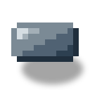
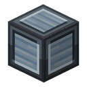
采石场基座
alaindustrial:quarry_foundation
全部变体
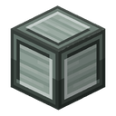
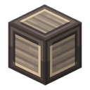
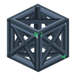
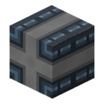
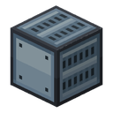
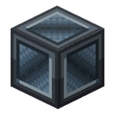
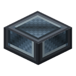
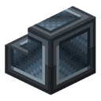
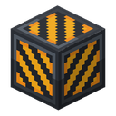
概览
将来用来建造采石场的方块。采石场推出之前，它们是坚固的工业装饰：可以随意用来建造。采石场推出后，同样的方块会成为它的部件， 用它们建好的东西不会损坏。模型和纹理由模组设计师 rainbowboii 绘制。
这一套包括三种采石场基座（回火铁、因瓦、复合下界合金）、回火铁脚手架、两种轨道梁（混凝土和板材）、 带台阶和楼梯的强化板方块，以及黄黑条纹的警示条纹方块。几乎都由工业混凝土 和回火铁制成。设计师所说的“钢板方块”就是熟悉的回火铁板方块，它随这一套换上了新纹理。
行为
采石场基座
三种基座的颜色和强度不同：复合下界合金基座和复合下界合金块一样坚硬，需要钻石镐。在采石场中，基座的等级将决定开采范围的大小； 在那之前，它们只是同一种方块的三种颜色。
回火铁脚手架
与原版脚手架行为一致，但不会坍塌：
| 内容 | 行为 |
|---|---|
| 进入 | 从侧面走进方块内部 |
| 攀爬 | 在内部像梯子一样上下攀爬 |
| 站立 | 可以站在方块顶部 |
| 下降 | 潜行时会穿过顶部落下；在内部潜行会像在梯子上一样停住 |
| 支撑 | 不需要：金属脚手架放在哪里就立在哪里，不会掉落 |
| 放置 | 像普通方块一样放置，不能像原版脚手架那样点击连续搭建 |
它是由立柱、横杆和斜撑组成的格架，透过它能看到相邻的方块。准星对准时的选择框是整个方块。
轨道梁
混凝土轨道梁和板材轨道梁的行为相同。它们只能水平放置，沿着玩家放置时面朝的方向；不能竖着放。梁上的铁轨沿梁的方向延伸： 混凝土梁上下两面都有，板材梁只有顶面有。结构方块旋转建筑时会连同梁一起转向。在采石场中它将是桥的轨道； 目前是带完整碰撞箱的装饰。
方块属性
| 方块 | 硬度 / 爆炸抗性 | 音效 |
|---|---|---|
| 采石场基座 | 5 / 6 | 金属 |
| 因瓦采石场基座 | 5 / 6 | 金属 |
| 复合下界合金采石场基座 | 50 / 1200，需要钻石镐 | 下界合金 |
| 回火铁脚手架 | 3 / 6 | 金属 |
| 混凝土轨道梁 | 3 / 9 | 石头 |
| 板材轨道梁 | 5 / 6 | 金属 |
| 强化板方块及其台阶和楼梯 | 5 / 6 | 金属 |
| 警示条纹方块 | 3 / 9 | 石头 |
全部需要用镐破坏，不用镐不会掉落任何东西；掉落方块本身。复合下界合金基座和复合下界合金块一样不会在岩浆中烧毁。 基座、轨道梁、强化板方块和警示条纹方块是完整方块；台阶和楼梯为原版形状。
配方
| 产物 | 配方 |
|---|---|
| 4 个采石场基座 | P C P / C B C / P C P：P 为回火铁板，C 为工业混凝土，B 为回火铁块 |
| 4 个因瓦采石场基座 | 同样的图案：因瓦板、工业混凝土、因瓦块 |
| 4 个复合下界合金采石场基座 | 同样的图案：复合下界合金锭、工业混凝土、复合下界合金块 |
| 6 个脚手架 | T. T /. B. / T. T：T 为回火铁，B 为回火铁栏杆 |
| 3 个混凝土轨道梁 | R P R / C C C：R 为铁轨，P 为回火铁板，C 为工业混凝土 |
| 3 个板材轨道梁 | R P R / P P P：R 为铁轨，P 为回火铁板 |
| 4 个强化板方块 | P T P / T C T / P T P：P 为回火铁板，T 为回火铁，C 为工业混凝土 |
| 强化板方块的 6 个台阶 / 4 个楼梯 | 3 个方块排成一行 / 6 个方块摆成阶梯状；切石机上 1 个方块得 2 个台阶或 1 个楼梯；2 个台阶竖向叠放换回方块 |
| 8 个警示条纹方块 | C C C / Y C K / C C C：C 为工业混凝土，Y 为黄色染料，K 为黑色染料 |
进阶
- 等级：无，方块不耗能。
- 需要：工业混凝土、回火铁板和回火铁块；高级基座还需要因瓦和复合下界合金。
- 解锁：在未来的版本中建造采石场；目前用作工业装饰。
相关内容
- 工业混凝土：大多数配方的材料。
- 回火铁板方块：同一位设计师的“钢板方块”。
- 回火铁栏杆、梯子、活板门和锁链：栏杆用于制作脚手架。
合成
有序合成
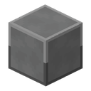
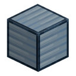
▶
×4
采石场基座